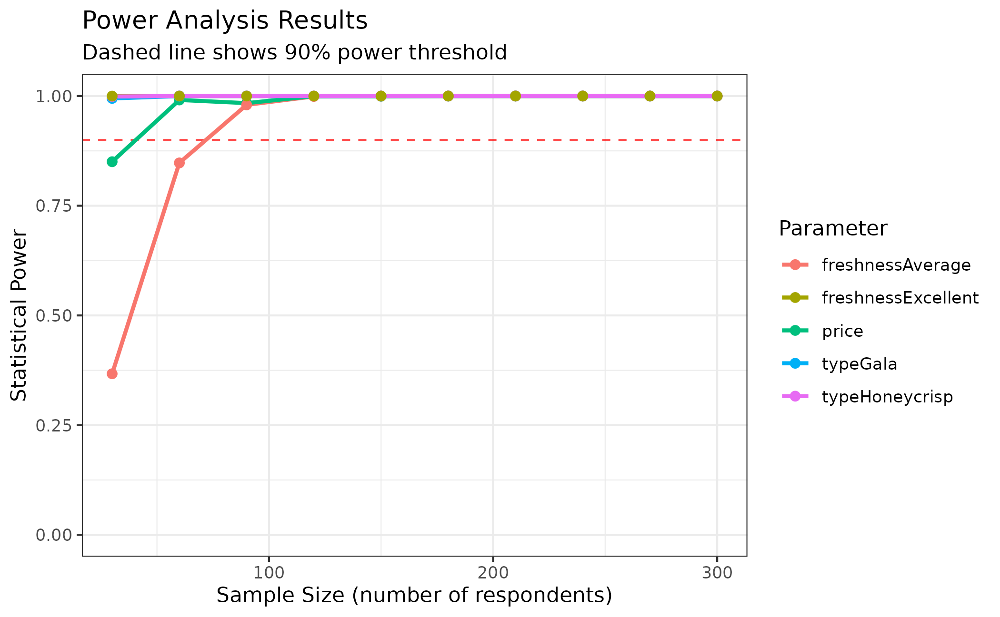

cbcTools provides a complete toolkit for designing and analyzing choice-based conjoint (CBC) experiments. This article walks through the entire workflow from defining attributes to creating and inspecting designs and determining sample size requirements, providing a quick start guide for new users and an overview of the package’s capabilities. Other articles cover more details on each step.
The cbcTools Workflow
The package supports a step-by-step process for developing choice experiment designs:

Each step uses functions that begin with cbc_ and builds
on the previous step:
-
Generate Profiles →
cbc_profiles()- Define attributes and levels -
Specify Priors →
cbc_priors()- Specify prior preference assumptions (optional) -
Generate Designs →
cbc_design()- Create choice question design -
Inspect Designs →
cbc_inspect()- Evaluate design quality -
Simulate Choices →
cbc_choices()- Generate realistic choice data -
Assess Power →
cbc_power()- Determine sample size requirements
Let’s walk through each step with a complete example. Imagine we’re designing a choice experiment to understand consumer preferences for apples. We want to study how price, type, and freshness influence purchase decisions.
Step 1: Generate Profiles
Start by defining the attributes and levels for your experiment:
profiles <- cbc_profiles(
price = c(1.0, 1.5, 2.0, 2.5, 3.0), # Price per pound ($)
type = c('Fuji', 'Gala', 'Honeycrisp'),
freshness = c('Poor', 'Average', 'Excellent')
)
profiles
#> CBC Profiles
#> ============
#> price : Continuous (5 levels, range: 1.00-3.00)
#> type : Categorical (3 levels: Fuji, Gala, Honeycrisp)
#> freshness : Categorical (3 levels: Poor, Average, Excellent)
#>
#> Profiles: 45
#> First few rows:
#> profileID price type freshness
#> 1 1 1.0 Fuji Poor
#> 2 2 1.5 Fuji Poor
#> 3 3 2.0 Fuji Poor
#> 4 4 2.5 Fuji Poor
#> 5 5 3.0 Fuji Poor
#> 6 6 1.0 Gala Poor
#> ... and 39 more rowsThis creates all possible combinations of attribute levels - our “universe” of possible products to include in choice questions.
See the Generating Profiles article for more details and options on defining profiles, such as including restrictions.
Step 2: Specify Priors
Specify your assumptions about consumer preferences based on theory, literature, or pilot studies. These can be used for generating designs that incorporate these expected preferences as well as simulating choices for a given design.
priors <- cbc_priors(
profiles = profiles,
price = -0.25, # Negative = people prefer lower prices
type = c(0.5, 1), # Gala and Honeycrisp preferred over Fuji (reference)
freshness = c(0.6, 1.2) # Average and Excellent preferred over Poor (reference)
)
priors
#> CBC Prior Specifications:
#>
#> price:
#> Continuous variable
#> Levels: 1, 1.5, 2, 2.5, 3
#> Fixed parameter
#> Coefficient: -0.25
#>
#> type:
#> Categorical variable
#> Levels: Fuji, Gala, Honeycrisp
#> Reference level: Fuji
#> Fixed parameter
#> Gala: 0.5
#> Honeycrisp: 1
#>
#> freshness:
#> Categorical variable
#> Levels: Poor, Average, Excellent
#> Reference level: Poor
#> Fixed parameter
#> Average: 0.6
#> Excellent: 1.2Understanding Reference Levels
For categorical attributes, the reference level is set by the
first level defined in cbc_profiles(), which in
this case is "Fuji" for Type and
"Poor" for Freshness. This would imply the
following for the above set of priors:
- Type: Fuji (reference), Gala (+0.5), Honeycrisp (+1.0)
- Freshness: Poor (reference), Average (+0.6), Excellent (+1.2)
See the Specifying Priors article for more details and options on defining priors.
Step 3: Generate Designs
Create the set of choice questions that respondents will see. By
default, all categorical variables are dummy-coded in the resulting
design (you can convert the design back to categorical formatting with
cbc_decode()):
design <- cbc_design(
profiles = profiles,
method = "stochastic", # D-optimal method
n_alts = 3, # 2 alternatives per choice question
n_q = 6, # 6 questions per respondent
n_resp = 300, # 300 respondents
priors = priors # Use our priors for optimization
)
design
#> Design method: stochastic
#> Structure: 300 respondents × 6 questions × 3 alternatives
#> Profile usage: 15/45 (33.3%)
#> D-error: 0.821569
#>
#> üí° Use cbc_inspect() for a more detailed summary
#>
#> First few rows of design:
#> profileID blockID respID qID altID obsID price typeGala typeHoneycrisp
#> 1 11 1 1 1 1 1 1 0 1
#> 2 25 1 1 1 2 1 3 1 0
#> 3 5 1 1 1 3 1 3 0 0
#> 4 15 1 1 2 1 2 3 0 1
#> 5 40 1 1 2 2 2 3 1 0
#> 6 16 1 1 2 3 2 1 0 0
#> freshnessAverage freshnessExcellent
#> 1 0 0
#> 2 1 0
#> 3 0 0
#> 4 0 0
#> 5 0 1
#> 6 1 0
#> ... and 5394 more rowsThe design generated is sufficient for a full survey for
n_resp respondents. cbcTools offers
several design methods, each with their own trade-offs:
-
"random": Random profiles for each respondent. -
"shortcut": Frequency-balanced, often results in minimal overlap within choice questions. -
"minoverlap": Prioritizes minimizing attribute overlap within choice questions. -
"balanced": Optimizes both frequency balance and pairwise attribute interactions. -
"stochastic": Minimizes D-error by randomly swapping profiles. -
"modfed": Minimizes D-error by swapping out all possible profiles (slower, more thorough). -
"cea": Minimizes D-error by attribute-by-attribute swapping.
All design methods ensure:
- No duplicate profiles within any choice set.
- No duplicate choice sets within any respondent.
- Dominance removal (if enabled) eliminates choice sets with dominant alternatives.
See the Generating Designs article for more details and options on generating experiment designs, such as including “no choice” options, using labeled designs, removing dominant options, and details about each design algorithm.
Step 4: Inspect Design
Use the cbc_inspect() function to evaluate the quality
and properties of your design. Key things to look for:
- D-error: Lower values indicate more efficient designs
- Balance: Higher scores indicate better attribute level balance
- Overlap: Lower scores indicate less attribute overlap within questions
- Profile usage: Higher percentages indicate better use of available profiles
See cbc_inspect
for more details.
cbc_inspect(design)
#> DESIGN SUMMARY
#> =========================
#>
#> STRUCTURE
#> ================
#> Method: stochastic
#> Created: 2025-08-10 18:44:34
#> Respondents: 300
#> Questions per respondent: 6
#> Alternatives per question: 3
#> Total choice sets: 1800
#> Profile usage: 15/45 (33.3%)
#>
#> SUMMARY METRICS
#> =================
#> D-error (with priors): 0.821569
#> D-error (null model): 0.756224
#> (Lower values indicate more efficient designs)
#>
#> Overall balance score: 0.610 (higher is better)
#> Overall overlap score: 0.100 (lower is better)
#>
#> VARIABLE ENCODING
#> =================
#> Format: Dummy-coded (type, freshness)
#> üí° Use cbc_decode_design() to convert to categorical format
#>
#> ATTRIBUTE BALANCE
#> =================
#> Overall balance score: 0.610 (higher is better)
#>
#> Individual attribute level counts:
#>
#> price:
#>
#> 1 1.5 2 2.5 3
#> 1800 600 300 300 2400
#> Balance score: 0.529 (higher is better)
#>
#> typeGala:
#>
#> 0 1
#> 3900 1500
#> Balance score: 0.614 (higher is better)
#>
#> typeHoneycrisp:
#>
#> 0 1
#> 3900 1500
#> Balance score: 0.614 (higher is better)
#>
#> freshnessAverage:
#>
#> 0 1
#> 3600 1800
#> Balance score: 0.680 (higher is better)
#>
#> freshnessExcellent:
#>
#> 0 1
#> 3900 1500
#> Balance score: 0.614 (higher is better)
#>
#> ATTRIBUTE OVERLAP
#> =================
#> Overall overlap score: 0.100 (lower is better)
#>
#> Counts of attribute overlap:
#> (# of questions with N unique levels)
#>
#> price: Continuous variable
#> Questions by # unique levels:
#> 1 (complete overlap): 0.0% (0 / 1800 questions)
#> 2 (partial overlap): 66.7% (1200 / 1800 questions)
#> 3 (partial overlap): 33.3% (600 / 1800 questions)
#> 4 (partial overlap): 0.0% (0 / 1800 questions)
#> 5 (no overlap): 0.0% (0 / 1800 questions)
#> Average unique levels per question: 2.33
#>
#> typeGala: Continuous variable
#> Questions by # unique levels:
#> 1 (complete overlap): 16.7% (300 / 1800 questions)
#> 2 (no overlap): 83.3% (1500 / 1800 questions)
#> Average unique levels per question: 1.83
#>
#> typeHoneycrisp: Continuous variable
#> Questions by # unique levels:
#> 1 (complete overlap): 16.7% (300 / 1800 questions)
#> 2 (no overlap): 83.3% (1500 / 1800 questions)
#> Average unique levels per question: 1.83
#>
#> freshnessAverage: Continuous variable
#> Questions by # unique levels:
#> 1 (complete overlap): 0.0% (0 / 1800 questions)
#> 2 (no overlap): 100.0% (1800 / 1800 questions)
#> Average unique levels per question: 2.00
#>
#> freshnessExcellent: Continuous variable
#> Questions by # unique levels:
#> 1 (complete overlap): 16.7% (300 / 1800 questions)
#> 2 (no overlap): 83.3% (1500 / 1800 questions)
#> Average unique levels per question: 1.83Step 5: Simulate Choices
Generate realistic choice data to test your design with the
cbc_choices() function. By default, random choices are
made, but if you provide priors with the priors argument,
choices will be made according to the utility model defined by your
priors:
# Simulate choices using our priors
choices <- cbc_choices(design, priors = priors)
choices
#> CBC Choice Data
#> ===============
#> Observations: 1800 choice tasks
#> Alternatives per task: 3
#> Respondents: 300
#> Questions per respondent: 6
#> Total choices made: 1800
#>
#> Simulation method: utility_based
#> Original design D-error: 0.821569
#> Priors: Used for utility-based simulation
#> Simulated at: 2025-08-10 18:44:35
#>
#> Choice rates by alternative:
#> Alt 1: 31.6% (569 choices)
#> Alt 2: 33.0% (594 choices)
#> Alt 3: 35.4% (637 choices)
#>
#> First few rows:
#> profileID blockID respID qID altID obsID price typeGala typeHoneycrisp
#> 1 11 1 1 1 1 1 1 0 1
#> 2 25 1 1 1 2 1 3 1 0
#> 3 5 1 1 1 3 1 3 0 0
#> 4 15 1 1 2 1 2 3 0 1
#> 5 40 1 1 2 2 2 3 1 0
#> 6 16 1 1 2 3 2 1 0 0
#> freshnessAverage freshnessExcellent choice
#> 1 0 0 1
#> 2 1 0 0
#> 3 0 0 0
#> 4 0 0 0
#> 5 0 1 1
#> 6 1 0 0
#> ... and 5394 more rowsTaking a look at some quick summaries, you can see that the simulated choice patterns align with our priors - lower prices, preferred apple types, and better freshness should be chosen more often (not always for all levels though as there is some level of randomness involved). To do this, it’s often easier to work with the design with categorical coding instead of dummy coding:
choices_cat <- cbc_decode(choices)
# Filter for the chosen rows only
choices_cat <- choices_cat[which(choices_cat$choice == 1), ]
# Counts of choices made for each attribute level
table(choices_cat$price)
#>
#> 1 1.5 2 2.5 3
#> 587 214 44 214 741
table(choices_cat$type)
#>
#> Fuji Gala Honeycrisp
#> 625 487 688
table(choices_cat$freshness)
#>
#> Poor Average Excellent
#> 421 659 720See the Simulating Choices article for more details and options on inspeciting and comparing different experiment designs.
Step 6: Assess Power
Determine if your sample size provides adequate statistical power.
The cbc_power() function auto-determines the attributes in
your design and estimates multiple logit models using incrementally
increasing sample sizes to assess power:
power <- cbc_power(choices)
power
#> CBC Power Analysis Results
#> ==========================
#>
#> Sample sizes tested: 30 to 300 (10 breaks)
#> Significance level: 0.050
#> Parameters: price, typeGala, typeHoneycrisp, freshnessAverage, freshnessExcellent
#>
#> Power summary (probability of detecting true effect):
#>
#> n = 30:
#> price : Power = 0.980, SE = 0.1007
#> typeGala : Power = 0.640, SE = 0.2121
#> typeHoneycrisp: Power = 0.982, SE = 0.2202
#> freshnessAverage: Power = 0.994, SE = 0.2153
#> freshnessExcellent: Power = 0.998, SE = 0.2402
#>
#> n = 90:
#> price : Power = 1.000, SE = 0.0568
#> typeGala : Power = 0.870, SE = 0.1215
#> typeHoneycrisp: Power = 1.000, SE = 0.1253
#> freshnessAverage: Power = 1.000, SE = 0.1234
#> freshnessExcellent: Power = 1.000, SE = 0.1355
#>
#> n = 180:
#> price : Power = 1.000, SE = 0.0404
#> typeGala : Power = 1.000, SE = 0.0859
#> typeHoneycrisp: Power = 1.000, SE = 0.0898
#> freshnessAverage: Power = 1.000, SE = 0.0885
#> freshnessExcellent: Power = 1.000, SE = 0.0960
#>
#> n = 240:
#> price : Power = 1.000, SE = 0.0349
#> typeGala : Power = 1.000, SE = 0.0747
#> typeHoneycrisp: Power = 1.000, SE = 0.0778
#> freshnessAverage: Power = 1.000, SE = 0.0771
#> freshnessExcellent: Power = 1.000, SE = 0.0833
#>
#> n = 300:
#> price : Power = 1.000, SE = 0.0312
#> typeGala : Power = 1.000, SE = 0.0673
#> typeHoneycrisp: Power = 1.000, SE = 0.0696
#> freshnessAverage: Power = 1.000, SE = 0.0696
#> freshnessExcellent: Power = 1.000, SE = 0.0755
#>
#> Use plot() to visualize power curves.
#> Use summary() for detailed power analysis.You can easily visualize the results as well using the
plot() function:
plot(power, type = "power", power_threshold = 0.9)
Finally, using the summary() function you can determine
the exact size required to identify each attribute:
summary(power, power_threshold = 0.9)
#> CBC Power Analysis Summary
#> ===========================
#>
#> Sample size requirements for 90% power:
#>
#> price : n >= 30 (achieves 98.0% power, SE = 0.1007)
#> typeGala : n >= 120 (achieves 99.6% power, SE = 0.1048)
#> typeHoneycrisp : n >= 30 (achieves 98.2% power, SE = 0.2202)
#> freshnessAverage: n >= 30 (achieves 99.4% power, SE = 0.2153)
#> freshnessExcellent: n >= 30 (achieves 99.8% power, SE = 0.2402)See the Power article for more details and options on conducting power analyses to better understand your experiment designs.